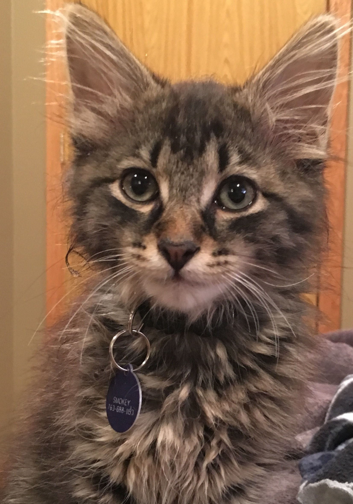
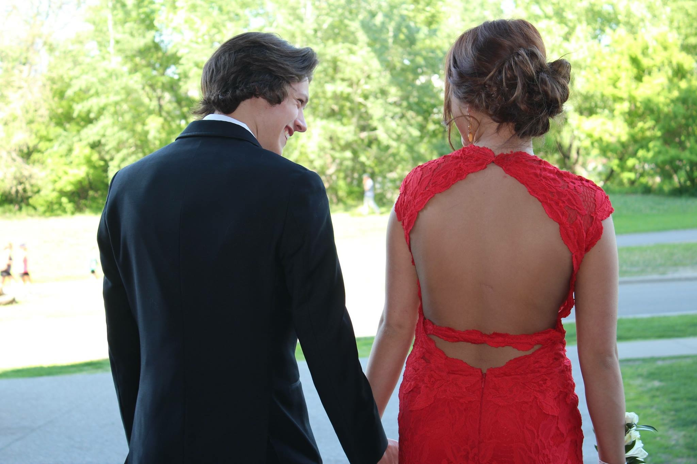

| Photo | Description |
|---|---|
|  |
Say hello to Smokey, he's my adopted cat you all have heard about. The reason I picked Smokey is because he's MY first pet that I spent my own money on. He's also changed me |
 |
This is a picture of my soccer team. I've been playing with these group of boys ever since 6th grade. We've traveled by cars and planes to multiple states for tournaments and also college show case tournaments. When we weren't playing games , we'd be at practice from 7-9 pm Mon-Fri. We were like a family. |
 |
This picture is to represent my "outdoor life", growing up my Dad would take my brother and I hunting, along with my uncle and grandfather. Besides hunting we would go fishing at our cabin and ice fishing during the winter. When my Stepdad came into my life he introduced me to ATV's and dirtbikes. We'd go riding up north in DeerHaven, MN, or at a cabin we rented out in Wisconsin. |
 |
Besides traveling for soccer I also have traveled alot with my parents! When I was 13 or 14 my Dad took my brother and I to Mexico for the first time ever. My Step-mom has a time share at a resort down there, so i've been there a few times. My Mom traveled with me everytime I went out of state for soccer so we've seen plenty of states together but when we weren't traveling for soccer, we would go out to California to visit her mom! |
 |
hello |
|  |
Last but not least a picture of my girlfriend Lexi and I at my senior prom. I've known Lexi since about 4th grade, we went to the same highschool |